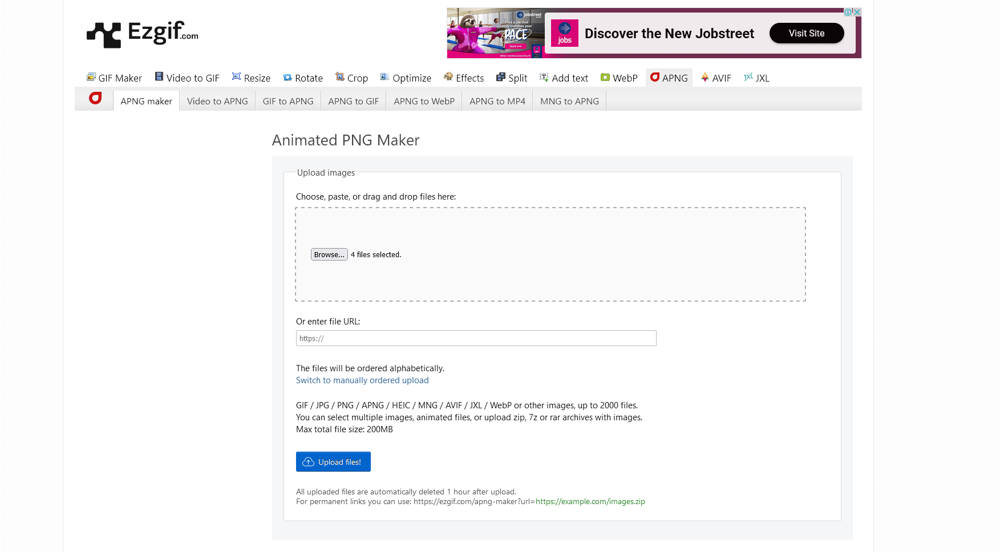
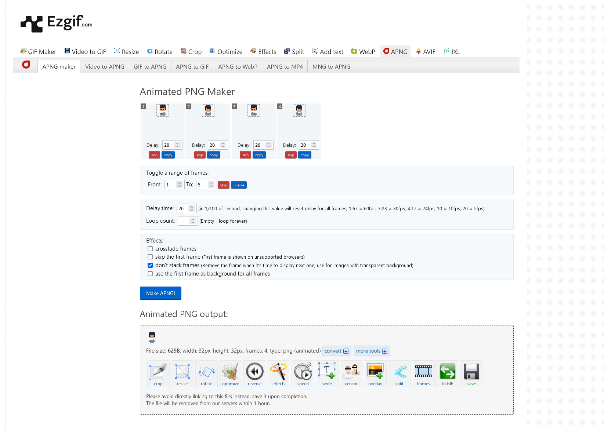

Step 1:
We are going to make 4 animated sprites that walk in 4 directions. First go to the website ezgif apng maker
Step 2:
We will first make 1 animated sprite that walks in 1 direction. To do that, upload 4 frames of the sprite walking in one direction from your folder.
Step 3:
You will see frames displayed on the page after uploading. Be sure to check on the box "Don't stack frames". Then click the "Make APNG" button.
Step 4:
You can then right click on the animated sprite and download it.